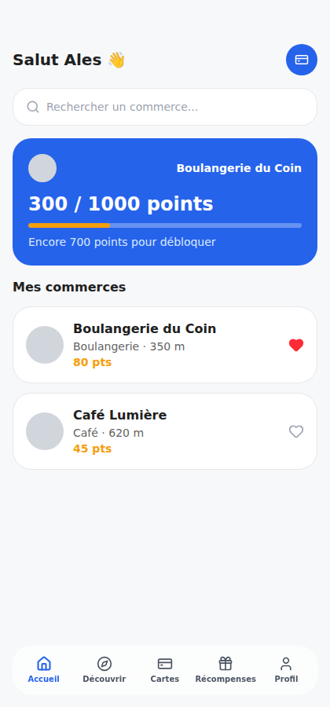
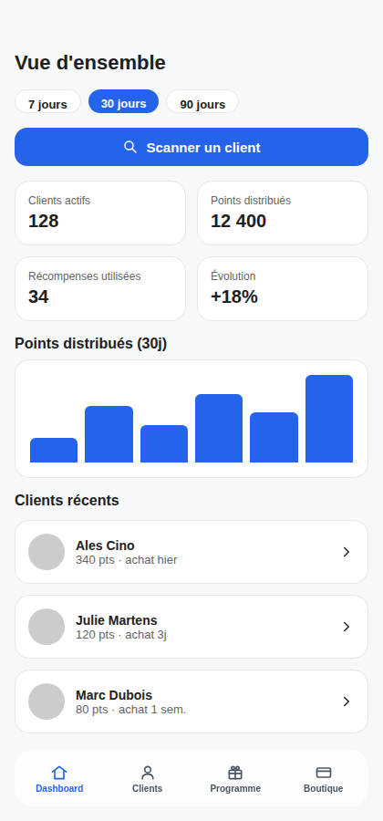
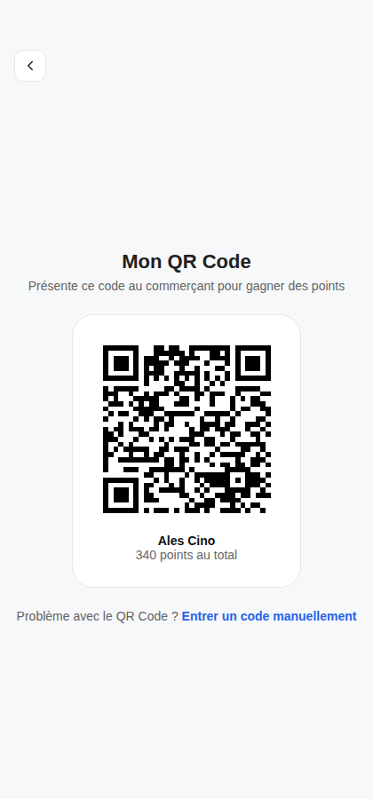
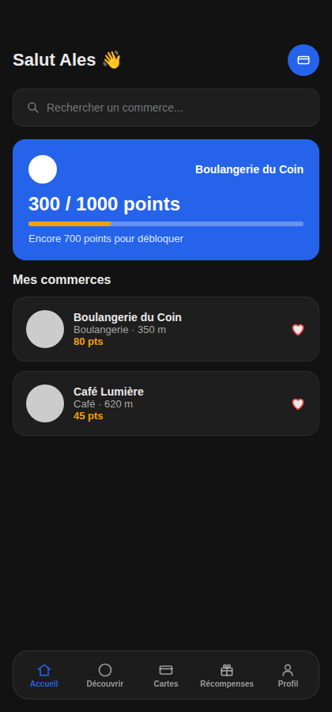
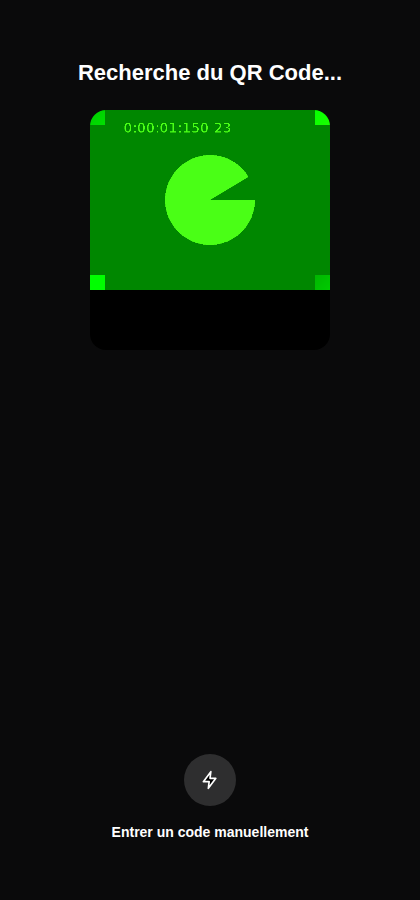
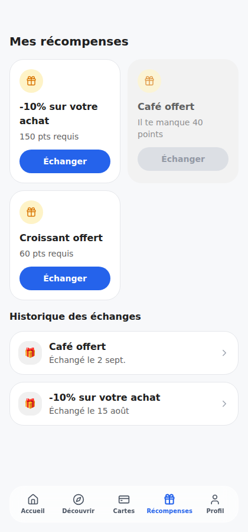

Belvantage — une carte de fidélité mutualisée pour les commerces de quartier
Un constat simple : un petit commerce indépendant n'a ni le budget ni le temps de développer sa propre appli de fidélité, et ses clients finissent avec une pile de cartes en carton qu'ils perdent. Belvantage propose une seule appli mutualisée — chaque client cumule des points chez plusieurs commerces différents, chaque commerçant scanne un QR Code pour attribuer les points, sans rien développer lui-même.


Deux expériences distinctes dans une seule appli : le parcours Client (à gauche) et le parcours Commerçant (à droite).
La démarche
Du cadrage au code, avec une décision qui a tout changé en cours de route
Cadrage
Le produit n'appartient à aucun commerce en particulier : c'est une plateforme mutualisée pensée pour accueillir n'importe quel commerce local — boulangerie, café, institut, artisan. Deux profils avec des besoins opposés : le client qui veut cumuler des points sans complexité, le commerçant qui veut fidéliser sans rien développer.
Le pivot QR Code
La première version du parcours de validation reposait uniquement sur un code à 4 chiffres donné oralement par le commerçant — fonctionnel, mais avec de la friction. Un benchmark sur Starbucks Rewards a confirmé qu'un mécanisme « scanner le QR, les points s'ajoutent automatiquement » réduisait cette friction pour tout le monde, pas seulement pour un public technophile. Le QR Code est devenu le parcours principal ; le code à 4 chiffres reste disponible comme solution de secours, jamais supprimé.

Le vrai QR Code, généré côté client — chaque personne a un code unique et permanent, sur le modèle d'une carte de membre Basic Fit.
Deux parcours, un seul design system
Plutôt que deux projets séparés, un seul Design System (couleurs, typographie, composants) alimente les deux expériences. Le Dashboard commerçant devait surtout paraître crédible pour un vrai indépendant : filtres 7/30/90 jours avec de vraies données différentes par période, action principale (« Scanner un client ») mise en avant plutôt que cachée dans un menu.
Un vrai dark mode, pas un habillage
Premier essai naïf : dupliquer chaque écran en version sombre — vite ingérable, incohérent avec la vraie méthode. La bonne solution s'est trouvée dans le mécanisme natif de Figma (SET_VARIABLE_MODE) : un seul jeu d'écrans, un interrupteur qui bascule instantanément toutes les couleurs liées aux variables — aucune duplication. Rejoué à l'identique en code avec une simple classe CSS globale.

Mode sombre réel — fond et surfaces suivent les recommandations Material Design (surfaces plus claires que le fond, jamais de noir pur).
Du Figma au code fonctionnel
Le prototype Figma terminé, le projet est passé en HTML/CSS/JS pur — volontairement sans framework, pour rester lisible et modifiable sans outillage complexe. Le QR Code et le scanner caméra du commerçant sont réellement fonctionnels : accès à la caméra du navigateur, décodage d'image en temps réel, tout en JavaScript natif.

Le scanner utilise la vraie caméra du navigateur (getUserMedia) — pas une simulation visuelle.
Design visuel
Un Design System construit pour être réutilisé
32 composants avec variants documentés dans Figma, un système d'icônes mappé 1:1 sur la librairie open-source Lucide pour un transfert direct vers le code.

Distinction volontaire entre récompense disponible, verrouillée (avec le nombre de points manquants affiché) et déjà échangée.
Un vrai audit de contraste WCAG a été mené sur les paires de couleurs clés — un défaut a d'ailleurs été détecté (texte blanc sur badge orange, 2,15:1, non conforme) puis corrigé en direct pendant l'audit.
Titre — Inter 800
Texte courant — Inter, 14–16px
LABELS & BADGES — Inter Semi Bold
Extrait du Design System : palette, échelle typographique et composants — les mêmes variables pilotent le mode clair et le mode sombre.
Recherche & benchmark
Une recherche honnête plutôt qu'un faux sondage
Sans client réel ni panel d'utilisateurs pour ce projet personnel, la recherche s'appuie sur des données secondaires publiques et un vrai benchmark concurrentiel — pas sur des statistiques inventées.
Donnée secondaire
Baromètre Fidme 2024
Un foyer possède en moyenne 16 cartes de fidélité et n'en utilise que 2 par semaine — le point de départ qui justifie une appli mutualisée plutôt qu'une carte de plus.
Concurrent direct
Fidme
Numérise des cartes de fidélité qui existent déjà. Ne résout pas le problème du commerçant qui n'a aucun programme digital à numériser — l'angle mort que ce projet vient combler.
Inspiration hors secteur
Too Good To Go
Principe de découverte géolocalisée sans friction, repris pour l'écran Découverte du projet.
Inspiration hors secteur
Starbucks Rewards
« Scannez votre QR code en caisse » — exactement le mécanisme retenu comme parcours principal de validation des points.
Conception d'interaction
Des micro-interactions testées, pas juste dessinées
Un audit systématique du prototype a permis de trouver de vrais défauts avant qu'ils n'atteignent le code : boutons sans destination, écrans sans retour possible, actions sensibles sans confirmation.
Confirmation avant action sensible
Échanger une récompense ou se déconnecter déclenchait l'action en un seul tap — une étape de confirmation annulable a été ajoutée aux deux.
Saisie du code manuel
Fallback si le QR Code ne fonctionne pas — validation en temps réel, jamais présenté comme le parcours par défaut.
Saisissez un code à 4 chiffres pour voir la validation en direct.
Interrupteur mode sombre
Le vrai composant utilisé sur les écrans Profil — état visible, libellé explicite, support clavier complet.
Validation en cours
Écran de chargement du scanner — bascule automatiquement vers l'écran suivant après un court délai, jamais un cul-de-sac.
Prêt.
Et ensuite
Prochaine étape : une vraie base de données
Le code fonctionne avec des données factices stockées dans le navigateur — chaque identifiant de QR Code est unique et permanent, mais rien n'est encore partagé entre appareils. La suite prévue : brancher une vraie base de données (Supabase) pour de vrais comptes utilisateurs, et ajouter les écrans d'erreur réseau déjà conçus dans le prototype Figma mais pas encore codés.
Un concept ouvert à la discussion
Belvantage est un projet personnel — un concept complet, du prototype Figma au code fonctionnel, mais qui n'appartient à aucun commerce en particulier et n'est pas (encore) un produit commercial lancé. Si vous êtes un commerce, une entreprise ou un porteur de projet intéressé par cette idée — reprise, licence, ou collaboration pour la développer ensemble — n'hésitez pas à me contacter pour en discuter.